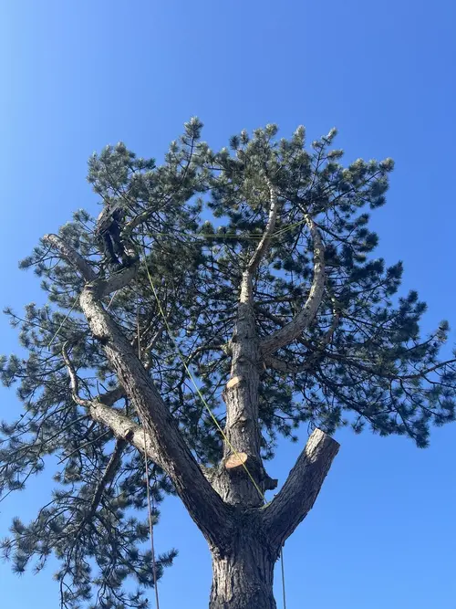

Conception de jardins sur-mesure
Nous transformons vos espaces extérieurs en véritables havres de paix, alliant esthétisme et durabilité. Nos paysagistes interviennent à Amiens, Péronne et dans toute la Somme pour créer des jardins adaptés à vos envies et à votre environnement.
Entretien écologique de jardins
Nous entretenons vos jardins avec des méthodes respectueuses de l'environnement et adaptées à chaque saison. Notre équipe basée à Belloy-en-Santerre propose des solutions durables pour préserver la beauté de vos espaces verts dans les Hauts-de-France.

Paysagiste professionnel en Hauts-de-France
Votre partenaire jardins à proximité d'Amiens, Péronne et leurs alentours

Nous créons, aménageons et entretenons vos jardins avec passion dans la région amiénoise. Paysagistes à Belloy-en-Santerre, nous mettons notre savoir-faire au service de vos espaces verts dans la Somme, l'Aisne et l'Oise, dans le respect de la nature et de vos envies.

Nos solutions complètes pour vos espaces verts dans la Somme

Création de massifs et plantations

Concevoir un massif réussi à Amiens, Péronne ou dans le département de la Somme, c'est allier esthétique, harmonie et adaptation au climat local. Nous commençons par définir l'emplacement idéal, en tenant compte de l'exposition et de la nature du sol typique des Hauts-de-France.
Le massif est ensuite structuré en plusieurs plans : les plantes les plus hautes à l'arrière, les moyennes au centre, et les plus basses devant, pour créer profondeur et dynamisme.

Avant la plantation, nous préparons soigneusement le sol : désherbage, décompactage, enrichissement si besoin.
Le choix des végétaux se fait selon vos envies, mais aussi selon les conditions climatiques d'Amiens, Péronne et de la région picarde, pour garantir une floraison durable et un entretien facilité.

Chaque massif est pensé pour s'intégrer parfaitement à votre espace extérieur, valoriser les perspectives et offrir un spectacle renouvelé au fil des saisons.
Nos paysagistes interviennent dans toute la Somme, de la région amiénoise à Péronne, pour créer des massifs adaptés à chaque jardin.
- Étude de l'emplacement et de l'exposition selon le climat picard
- Préparation et enrichissement du sol local
- Choix de plantes adaptées au climat des Hauts-de-France
- Disposition par hauteurs pour un effet naturel
- Conseils d'entretien personnalisés pour la région d'Amiens et Péronne
Élagage professionnel et taille de haies
Entretenir vos haies et arbres dans la région d'Amiens et Péronne demande savoir-faire et précision.
Nos paysagistes spécialisés réalisent la taille de haies, l'élagage et le façonnage d'arbustes pour garantir esthétique, santé et sécurité de votre jardin dans la Somme.

Notre équipe intervient avec du matériel professionnel pour des coupes nettes, respectueuses des végétaux. Nous adaptons la période et la technique selon chaque espèce, que ce soit une haie de thuya, laurier, charmille ou une intervention sur arbres fruitiers typiques des jardins picards.

Nous assurons également l'évacuation des déchets verts et le nettoyage du chantier, pour un jardin impeccable après notre passage.
Faites confiance à votre paysagiste local basé à Belloy-en-Santerre pour la taille de vos haies et l'élagage de vos arbres dans les Hauts-de-France !
- Taille de haies toutes essences
- Élagage et soins des arbres
- Respect des périodes de taille
- Matériel professionnel adapté
- Évacuation et propreté du chantier
Entretien saisonnier et suivi de jardins
Un jardin épanoui, c'est d'abord un espace suivi tout au long de l'année.
Ferme du Temps Paysages propose un entretien sur-mesure dans la région d'Amiens, Péronne et toute la Somme : surveillance de la santé des plantes, gestion de l'arrosage, apport de paillage, nettoyage des massifs, soin du sol et adaptation aux saisons picardes.

Nous privilégions des méthodes respectueuses de l'environnement : désherbage manuel, gestion raisonnée de l'eau, fertilisation organique, et conseils pour préserver la biodiversité de votre jardin. Chaque intervention vise à maintenir un équilibre naturel adapté au climat des Hauts-de-France et à anticiper les besoins de vos végétaux.

Nous proposons des passages réguliers ou ponctuels, selon vos attentes : remise en état après l'hiver, préparation du jardin pour l'été, entretien des massifs fleuris, surveillance des maladies, et petits travaux de remise en beauté pour chaque saison dans la région amiénoise.
- Suivi de la santé des plantes et du sol
- Gestion écologique : paillage, arrosage raisonné, fertilisation naturelle
- Nettoyage des massifs, allées et mobilier de jardin
- Désherbage manuel et prévention des maladies
- Conseils personnalisés pour un jardin vivant toute l'année
- Interventions ponctuelles ou contrats d'entretien annuel
Rénovation et reprise de jardins abandonnés
Votre jardin a été délaissé suite à un décès, un déménagement en maison de retraite ou vous venez d'acquérir une résidence secondaire dans la région d'Amiens ou Péronne ?
Nous redonnons vie aux espaces verts abandonnés dans la Somme, l'Aisne et l'Oise, en respectant l'histoire du lieu tout en l'adaptant à vos nouveaux besoins.

Notre équipe commence par un diagnostic complet : état des végétaux existants, analyse du sol, évaluation des structures (allées, terrasses, clôtures). Nous identifions ce qui peut être sauvé et valorisé, puis proposons un plan de rénovation adapté à votre budget et vos envies.
Nous intervenons également pour les agences immobilières afin de remettre en valeur les jardins avant mise sur le marché.

Chaque projet de rénovation est unique : débroussaillage, élagage de sauvetage, remise en état des pelouses, création de nouveaux massifs, remplacement des végétaux malades.
Nous transformons votre jardin en un espace accueillant et fonctionnel, en préservant son caractère tout en lui apportant une nouvelle jeunesse adaptée au climat des Hauts-de-France.
- Diagnostic complet de l'existant (végétaux, sol, structures)
- Débroussaillage et nettoyage des espaces abandonnés
- Élagage de sauvetage et soins des arbres anciens
- Remise en état des pelouses et création de nouveaux massifs
- Service spécialisé pour les agences immobilières
- Accompagnement pour résidences secondaires et successions
Contactez votre paysagiste
Devis gratuit pour vos projets de jardinage à Amiens, Péronne et dans toute la Somme